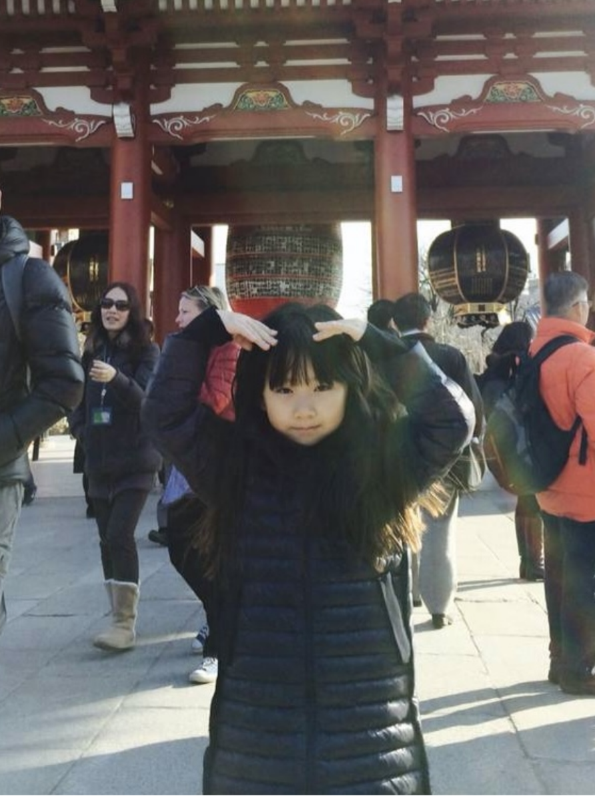

Alicia still lived in Beijing, but had moved to a new place not far from her childhood home. Though faced with change, she notes that she enjoyed this period of her life.
"The neighborhood was very different... I learned a lot during that time, made many new friends, and had a really happy period of life."
—Alicia
She remembers the life she had before phones had become a part of life. She remembers "watching [her] mom and the other designers work", and how she would "[bike] around the neighborhood to visit friends or go to classes together".
"...all very precious and fun memories."
—Alicia
Alicia mentions a big tree that was pretty significant during this point, and how her friends built a treehouse there. She mentions the busyness and heightened social experience that occured during this time.
